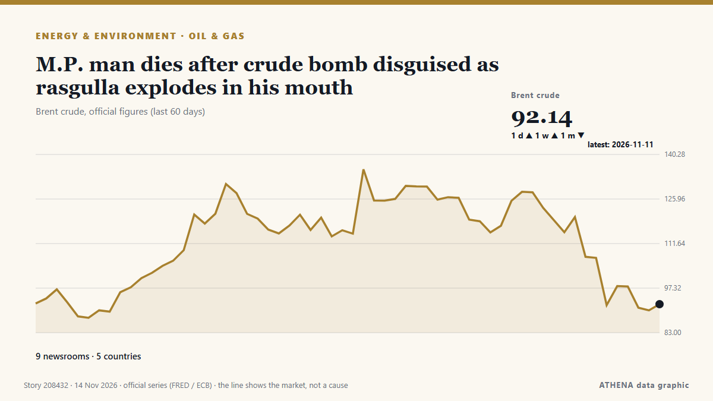

Energy, Resources & Environment
SponsoredPresented by  Cybernetics and Artificial Intelligence Lab Welcome to the Cybernetics and Artificial Intelligence Laboratory, established at the Department of Business Administration of the National and Kapodistrian University of Athens. The lab is headed by Professor Dimitrios Thomakos. The lab aims to do research that can be published in top venues. Our research uses tools and methods of Artificial Intelligence, and lies in the following areas: - Forecasting - Decision making - Cyber security - Finance We are always looking forward to collaborating with exceptional students!
Cybernetics and Artificial Intelligence Lab Welcome to the Cybernetics and Artificial Intelligence Laboratory, established at the Department of Business Administration of the National and Kapodistrian University of Athens. The lab is headed by Professor Dimitrios Thomakos. The lab aims to do research that can be published in top venues. Our research uses tools and methods of Artificial Intelligence, and lies in the following areas: - Forecasting - Decision making - Cyber security - Finance We are always looking forward to collaborating with exceptional students!

Oil & gasM.P. man dies after crude bomb disguised as rasgulla explodes in his mouth
Two men have been arrested in Dindori district after an acquaintance allegedly offered the victim a crude explosive used to kill wild boars, claiming it was a sweet. from The Hindu
| 1 Nov | 55 |
|---|---|
| 2 Nov | 121 |
| 3 Nov | 93 |
| 4 Nov | 99 |
| 5 Nov | 96 |
| 6 Nov | 60 |
| 7 Nov | 47 |
| 8 Nov | 55 |
| 9 Nov | 110 |
| 10 Nov | 110 |
| 11 Nov | 112 |
| 12 Nov | 86 |
| 13 Nov | 42 |
| 14 Nov | 1 |
EU outlines ‘winter’ assistance for Ukraine
The European Union is mobilizing additional resources through the rescEU mechanism to step up support for Ukraine ahead of the winter season and amid Russian attacks on the country’s critical… from Ukrinform (English)
‘Erdogan did not invite Christodoulides to Cop31’
President Nikos Christodoulides’ invitation to attend the Cop31 climate summit in Antalya came from the summit’s secretariat rather than Turkish President Recep Tayyip Erdogan, Turkish newspaper… from Cyprus Mail
10 killed in clashes in Guinea after artisanal mining ban
CONAKRY, Nov 13 - Ten people were killed in violent clashes with defence and security forces in a gold-producing region in northeastern Guinea, the country's Ministry of Territorial Administration… from The Straits Times
Google rolls out Gemini 4 Hydrogen, finally replacing 3.8 Flash
Gemini 4 Hydrogen isn't getting a slow, security-conscious release like Carbon and Argon. from Ars Technica
Gulf Oil Exports Recover as Hormuz Shipping Struggles
Global oil markets are beginning to recover from the Iran war, but shipping through the Strait of Hormuz remains severely disrupted, with vessel traffic roughly 65% below pre-conflict levels and... from gCaptain
The planet ‘is being killed’, Greta Thunberg tells Cop31 climate summit
Swedish activist criticised world governments for their failure to prevent environmental breakdown The planet is “not dying, it is being killed and we know by who”, said Greta Thunberg, who… from The Guardian
Delhi’s air quality enters ‘severe’ category, AQI breaches 400
As HT reported earlier, Delhi’s air quality deteriorated sharply on Thursday, with the city’s PM2.5 concentration more than doubling in 24 hours. from Hindustan Times
Global Warming Remains Unchecked, Experts Warn at UN’s COP31 Climate Summit
Climate Minister Darragh O’Brien will coordinate the bloc’s negotiations alongside the European Commission at COP31. from TheJournal.ie
Oil prices set for second weekly decline as Trump to stay with Iran blockade
Houthis say they attacked East-West pipeline in Saudi Arabia, Saudi Aramco building. from The Business Times
EBRD pledges $6bn for Türkiye’s REACT platform at COP31
EBRD has announced plans to invest $6bn in projects under the Türkiye REACT platform over the next five years. from Power Technology
Oil prices are so high that CO2 emissions from fossil fuels are dropping
It's not quite a victory for humanity's transition to renewables. from Science News
Chinese vice president meets Turkish president on sidelines of COP31
Chinese Vice President Han Zheng, as President Xi Jinping's special representative, met with Turkish President Recep Tayyip Erdogan on Wednesday on the sidelines of the Antalya Leaders' Summit of the… from CGTN (World)
METLEN and Tsakos Group Launch Construction of 251.9 MW Hybrid Renewable Energy Project in Domokos
The groundbreaking ceremony for the hybrid renewable energy project being jointly developed by METLEN and Tsakos Group was held on Wednesday in Domokos, marking the start of construction. from The National Herald
Oil Rises as Trump Dims Iran Deal Hopes
Oil prices rose more than 3% as Trump's comments dampened hopes for a diplomatic breakthrough with Iran. from Rigzone
Crude prices fall from six-month highs; WTI stands at $101 per barrel, Brent costs $115
Oil prices experienced a decline of over 1% after hitting six-month peaks, primarily due to geopolitical unrest in Saudi Arabia. from Times of India
COP31 participants say China injects impetus into global green development
A recent report from the Global Maritime Forum reveals that China has quickly become a global leader in green shipping. from Cyprus Shipping News
Fund for Energy Efficiency Technologies FEET is the first fund to adopt the Singapore-Asia Taxonomy for Sustainable Finance
• GCMD’s methodology for quantifying fuel savings from wind-assisted propulsion systems has been independently reviewed by Lloyd’s Register. • The. from Cyprus Shipping News
Climate change shows ‘our destinies are interconnected’: Türkiye’s COP31 president
Murat Kurum urges global cooperation, saying no country can shield itself from rising seas, droughts and extreme weather alone. from Anadolu Agency (English)
US handled $12 billion of Venezuela’s oil revenues, report says
The United States handled more than $12 billion of Venezuela’s oil revenues in the first nine months of this year, according to a report made public by the State Department on Thursday, in an… from Cyprus Mail
‘Now or never’ – Argentina targets UK, Malvinas oil project at tribunal
Delegation representing the government makes its case at the International Tribunal for the Law of the Sea, calling for provisional measures to halt new drilling and the installation of production… from Buenos Aires Times
MPA opens applications for LNG floating storage unit licences
The Maritime and Port Authority of Singapore has opened applications for licences to operate up to two LNG Floating Storage Units in Singapore anchorages. from Container News
Climate action must continue even if 'US is not here', Pacific leaders say
The United States government has no official presence at the climate talks in Türkiye, marking the second consecutive year the Trump administration has skipped the annual summit. from RNZ Pacific
Oil Prices Squeezed Between Peace Hopes and Iran Escalation Risk
Oil prices have crashed about 20% from the late-October peak of $118 per barrel, weighed down by hopes of sustainable de-escalation in the Middle East and the Russia-Ukraine war. from OilPrice.com
Yemen’s Houthis say they attacked pumping station on Saudi Arabia’s East-West oil pipeline
Yemen’s Iran-aligned Houthis said on Thursday they had attacked a pumping station on the Saudi East-West oil pipeline, an oil facility in the Saudi Red Sea city of Yanbu, and an Aramco building in… from Cyprus Mail
Naftogaz Gets Dutch Grant to Secure Winter Gas
Ukraine's state-owned Naftogaz secured an agreement for a Dutch government grant of over $25 million through the EBRD to help secure natural gas supply, as Ukraine and Russia continue to exchange… from Rigzone
Kurdistan President, Armenian PM explore closer ties, regional diplomacy
Shafaq News- Antalya Kurdistan Region President Nechirvan Barzani and Armenian Prime Minister Nikol Pashinyan discussed expanding cooperation between Yerevan, Baghdad, and Erbil on Thursday… from Shafaq News (English)
EU purchases of Russian Yamal LNG rise to over $9 billion in 2026, despite October dip
The European bloc has already paid over one-fifth more for Yamal LNG this year than throughout the entire 2025, according to Urgewald. from Kyiv Independent
Web Summit Cancels Day Two As Storm Charles Hits Lisbon
Storm Charles has put paid to day two of Web Summit in Lisbon, Portugal. from Deadline
'Significant evidence' of placer gold in Punjab rivers, says CM Maryam at minerals investment forum
Punjab Chief Minister Maryam Nawaz said on Thursday that there was “significant evidence” of “sufficient quantities” of placer gold flowing in the province’s five rivers. from Dawn
Iran wants compensation for environmental damage from US-Israeli strikes
'We expect the global community to establish a genuine and meaningful link between climate commitments in times of peace and responsibility in times of war,' says Iran's President Masoud Pezeshkian. from Rappler
Scientists predict 2026 hottest year on record as COP31 summit begins
By Nana Karikari, Senior Global Affairs Correspondent The world is on course for its hottest year in recorded history as the planet is hit with warming from climate change and El Niño. from GBC Ghana Online
Turkey, Saudi Arabia sign pact for 3,000 MW of wind power projects
Turkey and Saudi Arabia on Tuesday signed a pact for 3,000 megawatts of wind power projects in Turkey, the second phase of an agreement with Saudi energy company ACWA Power, the state-run Anadolu… from Turkish Minute